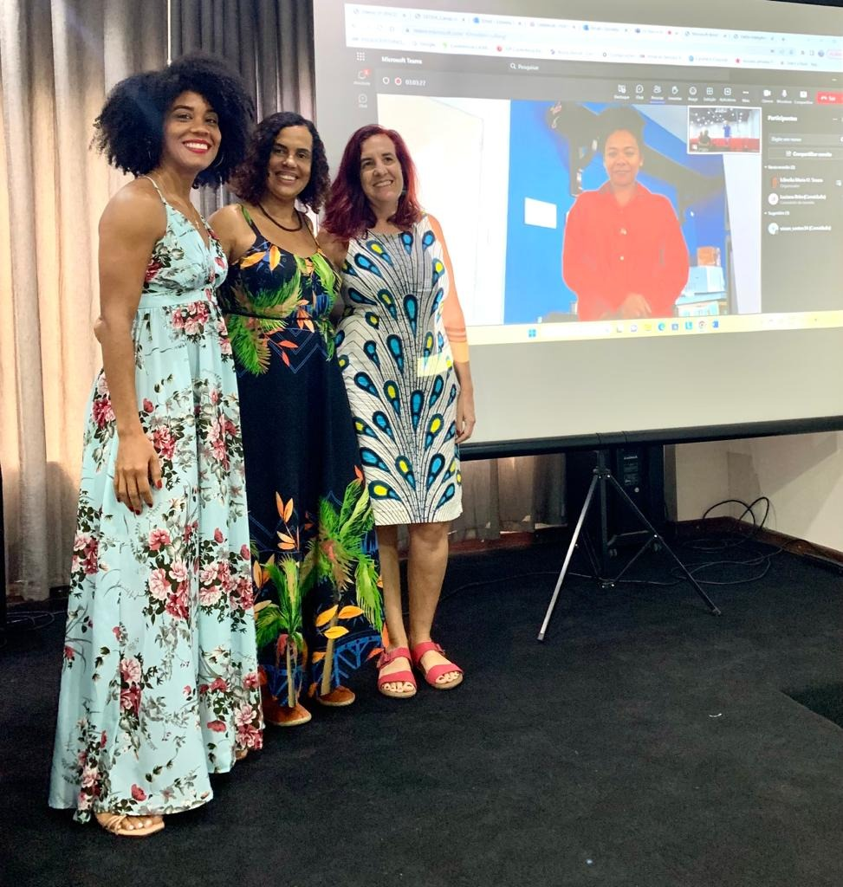
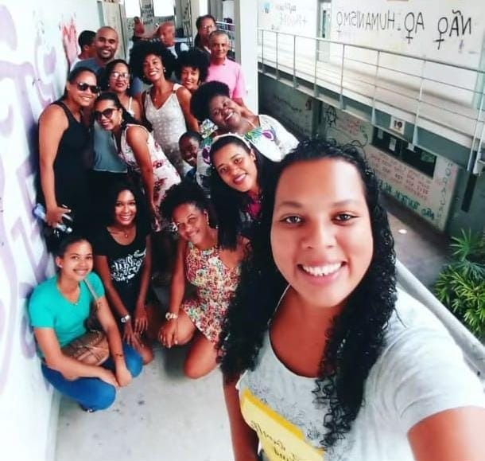
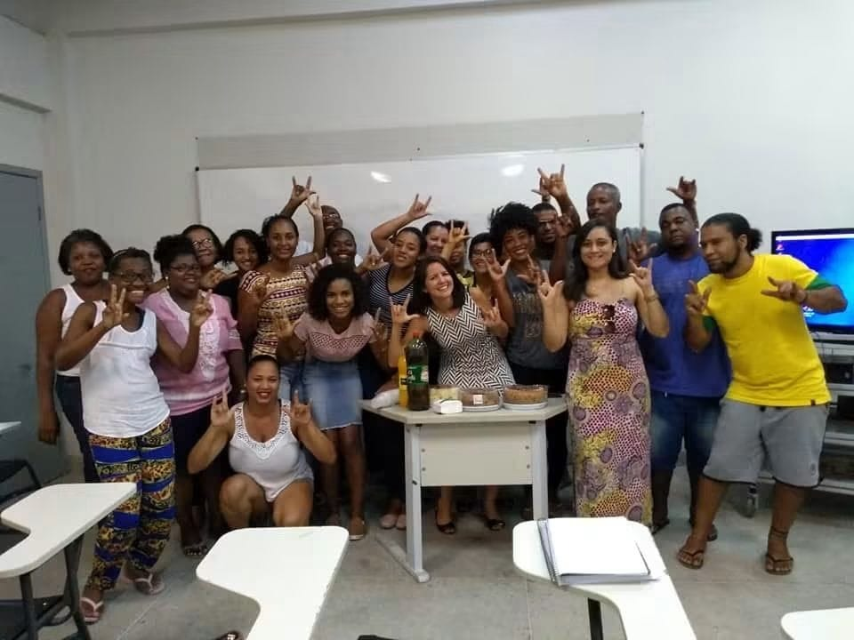
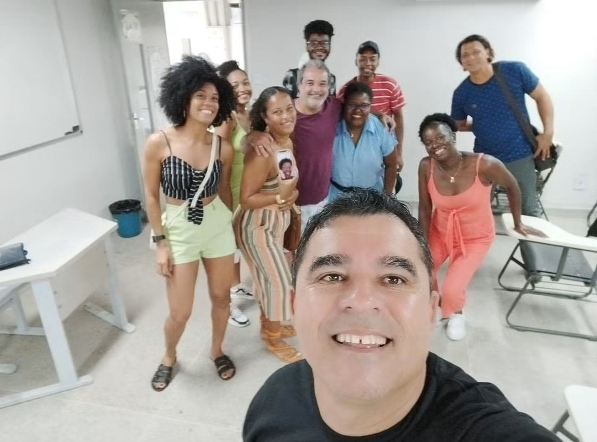
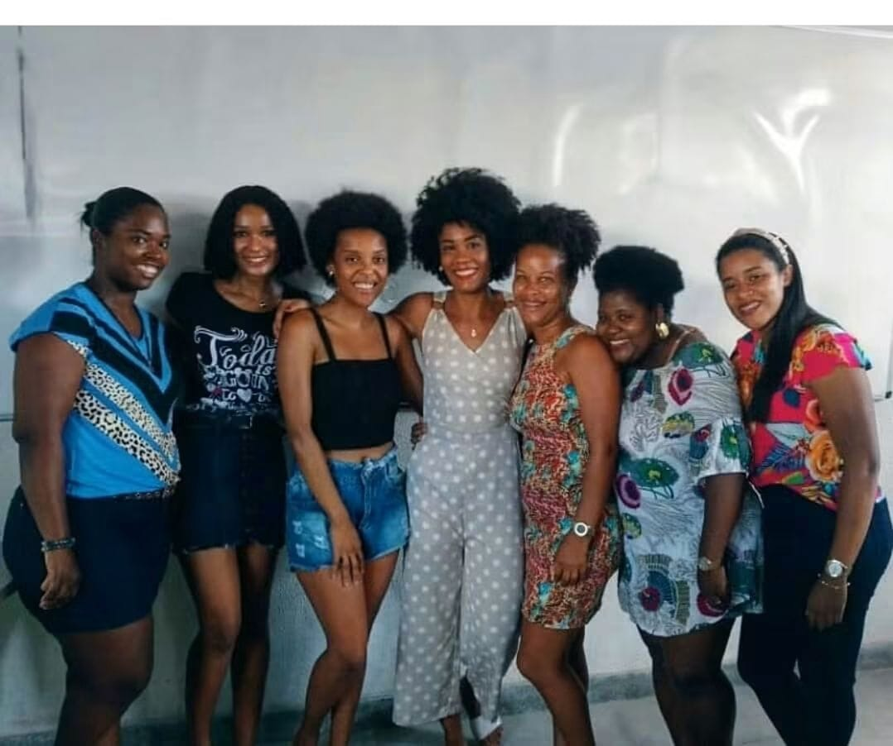
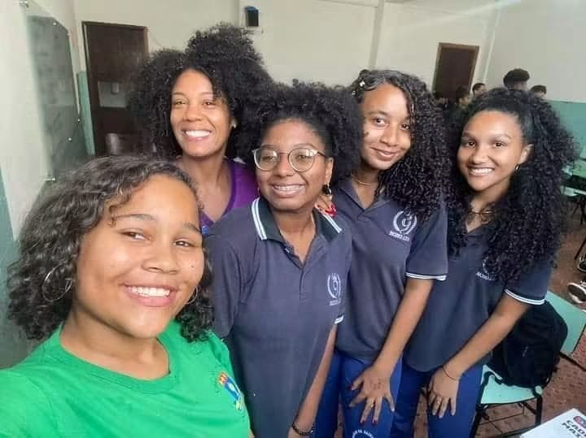
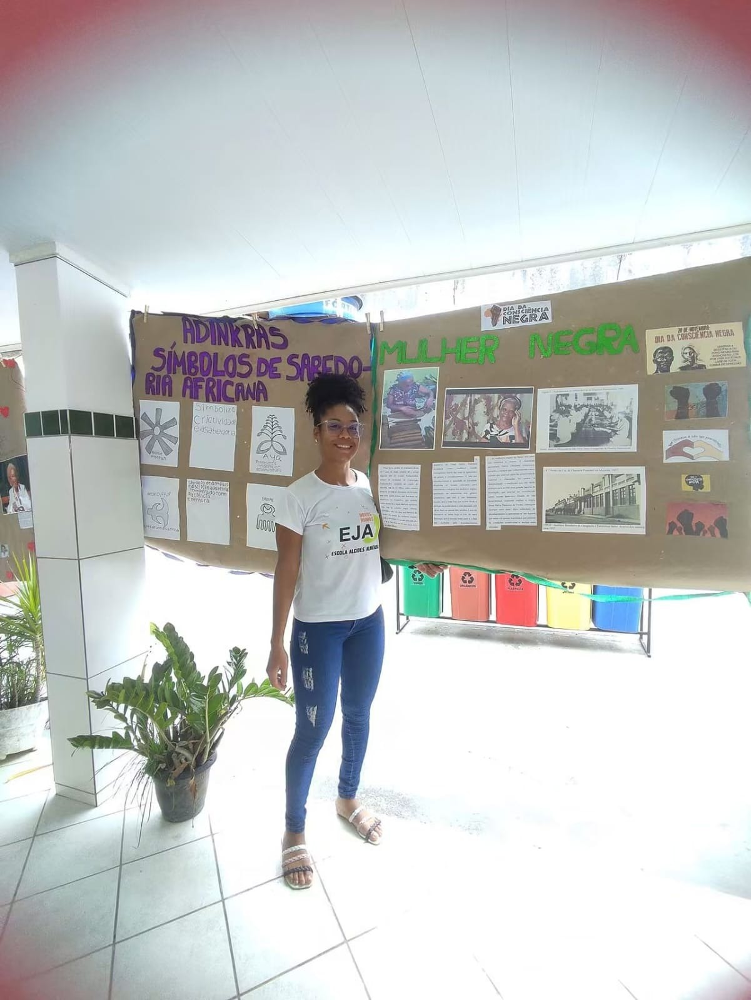
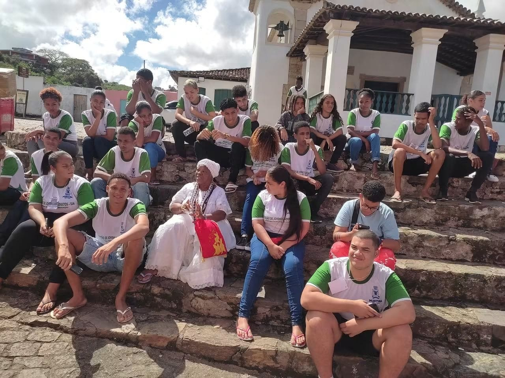
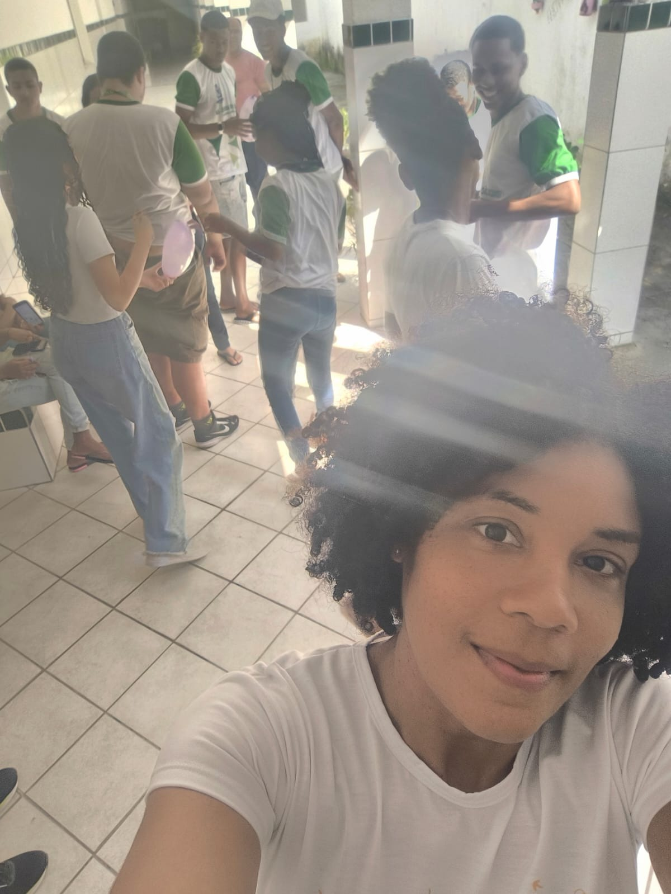

Santo Antônio de Jesus
Mestrado em História — UNEB Campus V
Entre 2021 e 2023, Viviane realizou o mestrado em História no Campus V da Universidade do Estado da Bahia. A fotografia registra a defesa do mestrado.
Trajetória de egressa
Da formação no CAHL à docência e ao serviço público em diferentes espaços do Recôncavo.
2014.2–2019.1
Viviane ingressou no Curso de História da UFRB em 2014.2 e concluiu a graduação em 2019.1. Em seu depoimento, recorda a universidade como espaço de formação acadêmica, descobertas, desafios, encontros e aprendizados, destacando também a presença de professores que marcaram sua formação profissional e humana.
Memórias do curso
Os registros compartilhados por Viviane documentam diferentes momentos da vida universitária, da sala de aula à conclusão do curso. Essas mesmas fotografias também passam a integrar a Galeria geral do Memorial.




Depois da UFRB
Depois da graduação, Viviane seguiu uma trajetória que articulou formação em pós-graduação, docência e atuação na educação pública. Esses momentos também estão representados no Mapa das Trajetórias.

Entre 2021 e 2023, Viviane realizou o mestrado em História no Campus V da Universidade do Estado da Bahia. A fotografia registra a defesa do mestrado.

Registro de Viviane em atuação docente no Colégio Sacramentinas, em Cachoeira.

Registro da atuação de Viviane na EJA, vinculada à Escola Alcides Almeida, em Muritiba.

Aula de campo realizada em Cachoeira com estudantes da Escola Alcides Almeida, de Muritiba.

Viviane informa atualmente atuação como servidora pública, vinculada à Escola Alcides Almeida, em Muritiba.
Depoimento
Viviane destaca a gratidão pelos ensinamentos, pelos desafios superados e pelas pessoas encontradas durante a graduação.
“Ser UFRB é levar comigo uma história que jamais será esquecida.”